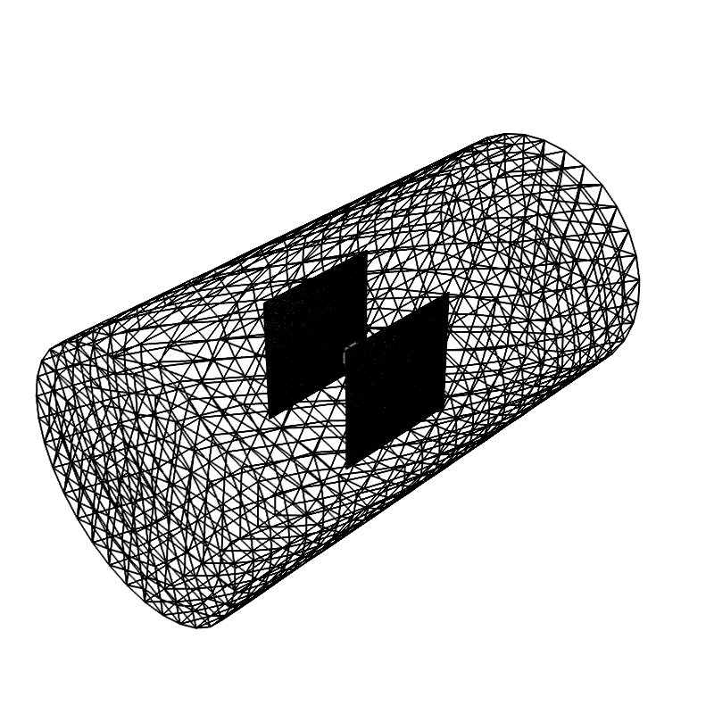
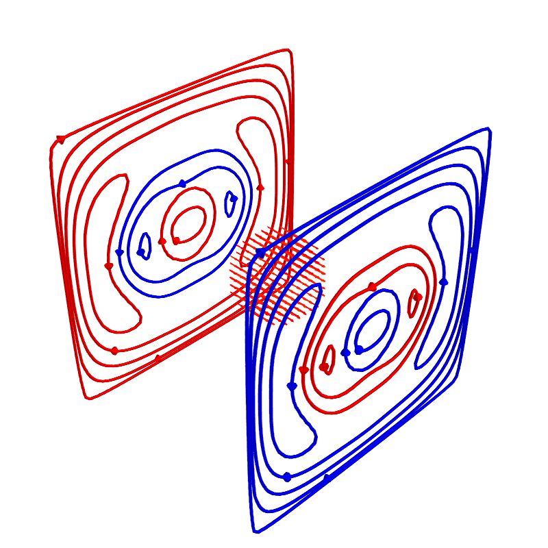
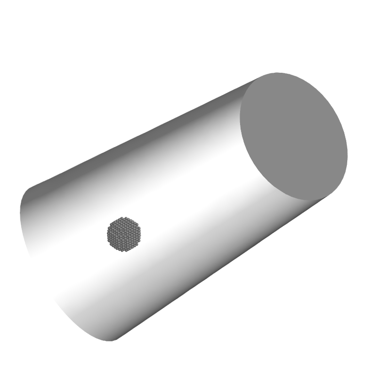

Note
Click here to download the full example code
Magnetically shielded coil¶
Compact example of design of a biplanar coil within a cylindrical shield. The effect of the shield is prospectively taken into account while designing the coil. The coil is positioned close to the end of the shield to demonstrate the effect
import numpy as np
from mayavi import mlab
import trimesh
from bfieldtools.conductor import Conductor, StreamFunction
from bfieldtools.coil_optimize import optimize_streamfunctions
from bfieldtools.contour import scalar_contour
from bfieldtools.viz import plot_3d_current_loops, plot_data_on_vertices
import pkg_resources
# Set unit, e.g. meter or millimeter.
# This doesn't matter, the problem is scale-invariant
scaling_factor = 1
# Load simple plane mesh that is centered on the origin
planemesh = trimesh.load(
file_obj=pkg_resources.resource_filename(
"bfieldtools", "example_meshes/10x10_plane_hires.obj"
),
process=False,
)
planemesh.apply_scale(scaling_factor)
# Specify coil plane geometry
center_offset = np.array([9, 0, 0]) * scaling_factor
standoff = np.array([0, 4, 0]) * scaling_factor
# Create coil plane pairs
coil_plus = trimesh.Trimesh(
planemesh.vertices + center_offset + standoff, planemesh.faces, process=False
)
coil_minus = trimesh.Trimesh(
planemesh.vertices + center_offset - standoff, planemesh.faces, process=False
)
joined_planes = coil_plus.union(coil_minus)
# Create mesh class object
coil = Conductor(mesh_obj=joined_planes, fix_normals=True, basis_name="inner")
# Separate object for shield geometry
shieldmesh = trimesh.load(
file_obj=pkg_resources.resource_filename(
"bfieldtools", "example_meshes/closed_cylinder_remeshed.stl"
),
process=True,
)
shieldmesh.apply_scale(15)
shield = Conductor(
mesh_obj=shieldmesh, process=True, fix_normals=True, basis_name="vertex"
)
Set up target points and plot geometry
# Here, the target points are on a volumetric grid within a sphere
# Set up target and stray field points
# Here, the target points are on a volumetric grid within a sphere
center = np.array([9, 0, 0]) * scaling_factor
sidelength = 3 * scaling_factor
n = 12
xx = np.linspace(-sidelength / 2, sidelength / 2, n)
yy = np.linspace(-sidelength / 2, sidelength / 2, n)
zz = np.linspace(-sidelength / 2, sidelength / 2, n)
X, Y, Z = np.meshgrid(xx, yy, zz, indexing="ij")
x = X.ravel()
y = Y.ravel()
z = Z.ravel()
target_points = np.array([x, y, z]).T
# Turn cube into sphere by rejecting points "in the corners"
target_points = (
target_points[np.linalg.norm(target_points, axis=1) < sidelength / 2] + center
)
# Plot coil, shield and target points
f = mlab.figure(None, bgcolor=(1, 1, 1), fgcolor=(0.5, 0.5, 0.5), size=(800, 800))
coil.plot_mesh(representation="surface")
shield.plot_mesh(representation="surface", cull_front=True, color=(0.9, 0.9, 0.9))
mlab.points3d(*target_points.T)
f.scene.isometric_view()
f.scene.camera.zoom(1.2)
- 
- 
- 
Let’s design a coil without taking the magnetic shield into account
# The absolute target field amplitude is not of importance,
# and it is scaled to match the C matrix in the optimization function
target_field = np.zeros(target_points.shape)
target_field[:, 0] = target_field[:, 0] + 1 # Homogeneous Y-field
target_abs_error = np.zeros_like(target_field)
target_abs_error[:, 0] += 0.005
target_abs_error[:, 1:3] += 0.01
target_spec = {
"coupling": coil.B_coupling(target_points),
"rel_error": 0,
"abs_error": target_abs_error,
"target": target_field,
}
import mosek
coil.s, coil.prob = optimize_streamfunctions(
coil,
[target_spec],
objective="minimum_inductive_energy",
solver="MOSEK",
solver_opts={"mosek_params": {mosek.iparam.num_threads: 8}},
)
Out:
Computing magnetic field coupling matrix, 3184 vertices by 672 target points... took 1.10 seconds.
Computing the inductance matrix...
Computing self-inductance matrix using rough quadrature (degree=2). For higher accuracy, set quad_degree to 4 or more.
Estimating 34964 MiB required for 3184 by 3184 vertices...
Computing inductance matrix in 80 chunks (10215 MiB memory free), when approx_far=True using more chunks is faster...
Computing 1/r-potential matrix
Inductance matrix computation took 34.91 seconds.
Pre-existing problem not passed, creating...
Passing parameters to problem...
Passing problem to solver...
Problem
Name :
Objective sense : min
Type : CONIC (conic optimization problem)
Constraints : 6930
Cones : 1
Scalar variables : 5795
Matrix variables : 0
Integer variables : 0
Optimizer started.
Problem
Name :
Objective sense : min
Type : CONIC (conic optimization problem)
Constraints : 6930
Cones : 1
Scalar variables : 5795
Matrix variables : 0
Integer variables : 0
Optimizer - threads : 8
Optimizer - solved problem : the dual
Optimizer - Constraints : 2897
Optimizer - Cones : 1
Optimizer - Scalar variables : 6930 conic : 2898
Optimizer - Semi-definite variables: 0 scalarized : 0
Factor - setup time : 1.36 dense det. time : 0.00
Factor - ML order time : 0.22 GP order time : 0.00
Factor - nonzeros before factor : 4.20e+06 after factor : 4.20e+06
Factor - dense dim. : 0 flops : 4.93e+10
ITE PFEAS DFEAS GFEAS PRSTATUS POBJ DOBJ MU TIME
0 1.3e+02 1.0e+00 2.0e+00 0.00e+00 0.000000000e+00 -1.000000000e+00 1.0e+00 116.77
1 6.2e+01 4.9e-01 8.3e-01 -1.88e-01 1.239064823e+02 1.233651484e+02 4.9e-01 118.44
2 2.8e+01 2.2e-01 2.7e-01 -7.59e-02 4.723781146e+02 4.720870056e+02 2.2e-01 120.08
3 6.6e+00 5.1e-02 3.4e-02 1.16e+00 7.663125840e+02 7.662699095e+02 5.1e-02 121.91
4 1.2e+00 9.7e-03 2.7e-03 1.00e+00 8.628630426e+02 8.628536154e+02 9.7e-03 123.72
5 1.7e-01 1.3e-03 1.4e-04 9.78e-01 8.845597680e+02 8.845587275e+02 1.3e-03 125.44
6 2.1e-02 1.6e-04 6.3e-06 1.00e+00 8.878602519e+02 8.878601291e+02 1.6e-04 127.23
7 2.6e-03 2.1e-05 2.9e-07 1.00e+00 8.883331804e+02 8.883331645e+02 2.1e-05 128.88
8 3.7e-04 2.9e-06 1.5e-08 1.00e+00 8.883916737e+02 8.883916715e+02 2.9e-06 130.50
9 2.1e-06 7.0e-08 2.6e-11 1.00e+00 8.884011257e+02 8.884011247e+02 8.9e-10 132.34
10 3.4e-06 5.2e-08 9.3e-12 1.00e+00 8.884011263e+02 8.884011259e+02 6.7e-10 134.44
11 1.6e-05 3.9e-08 2.1e-11 1.00e+00 8.884011267e+02 8.884011277e+02 5.0e-10 136.41
12 2.3e-05 2.0e-08 9.5e-12 1.00e+00 8.884011274e+02 8.884011267e+02 2.5e-10 138.27
13 2.7e-06 9.9e-09 1.6e-12 1.00e+00 8.884011277e+02 8.884011276e+02 1.3e-10 140.16
Optimizer terminated. Time: 140.86
Interior-point solution summary
Problem status : PRIMAL_AND_DUAL_FEASIBLE
Solution status : OPTIMAL
Primal. obj: 8.8840112772e+02 nrm: 2e+03 Viol. con: 2e-10 var: 0e+00 cones: 0e+00
Dual. obj: 8.8840112756e+02 nrm: 6e+03 Viol. con: 4e-09 var: 4e-09 cones: 0e+00
Plot coil windings and target points
loops = scalar_contour(coil.mesh, coil.s.vert, N_contours=10)
f = mlab.figure(None, bgcolor=(1, 1, 1), fgcolor=(0.5, 0.5, 0.5), size=(800, 800))
mlab.clf()
plot_3d_current_loops(loops, colors="auto", figure=f)
B_target = coil.B_coupling(target_points) @ coil.s
mlab.quiver3d(*target_points.T, *B_target.T, mode="arrow", scale_factor=0.75)
f.scene.isometric_view()
f.scene.camera.zoom(0.95)
Now, let’s compute the effect of the shield on the field produced by the coil
# Points slightly inside the shield
d = (
np.mean(np.diff(shield.mesh.vertices[shield.mesh.faces[:, 0:2]], axis=1), axis=0)
/ 10
)
points = shield.mesh.vertices - d * shield.mesh.vertex_normals
# Solve equivalent stream function for the perfect linear mu-metal layer.
# This is the equivalent surface current in the shield that would cause its
# scalar magnetic potential to be constant
shield.s = StreamFunction(
np.linalg.solve(shield.U_coupling(points), coil.U_coupling(points) @ coil.s), shield
)
Out:
Computing scalar potential coupling matrix, 2773 vertices by 2773 target points... took 16.18 seconds.
Computing scalar potential coupling matrix, 3184 vertices by 2773 target points... took 17.65 seconds.
Plot the difference in field when taking the shield into account
f = mlab.figure(None, bgcolor=(1, 1, 1), fgcolor=(0.5, 0.5, 0.5), size=(800, 800))
mlab.clf()
B_target = coil.B_coupling(target_points) @ coil.s
B_target_w_shield = (
coil.B_coupling(target_points) @ coil.s
+ shield.B_coupling(target_points) @ shield.s
)
B_quiver = mlab.quiver3d(
*target_points.T,
*(B_target_w_shield - B_target).T,
colormap="viridis",
mode="arrow"
)
f.scene.isometric_view()
mlab.colorbar(B_quiver, title="Difference in magnetic field (a.u.)")
Out:
Computing magnetic field coupling matrix, 2773 vertices by 672 target points... took 1.00 seconds.
This object has no scalar data
<mayavi.core.lut_manager.LUTManager object at 0x0000025400075570>
Let’s redesign the coil taking the shield into account prospectively
shield.coupling = np.linalg.solve(shield.U_coupling(points), coil.U_coupling(points))
secondary_C = shield.B_coupling(target_points) @ shield.coupling
total_C = coil.B_coupling(target_points) + secondary_C
target_spec_w_shield = {
"coupling": total_C,
"rel_error": 0,
"abs_error": target_abs_error,
"target": target_field,
}
coil.s2, coil.prob2 = optimize_streamfunctions(
coil,
[target_spec_w_shield],
objective="minimum_inductive_energy",
solver="MOSEK",
solver_opts={"mosek_params": {mosek.iparam.num_threads: 8}},
)
Out:
Pre-existing problem not passed, creating...
Passing parameters to problem...
Passing problem to solver...
Problem
Name :
Objective sense : min
Type : CONIC (conic optimization problem)
Constraints : 6930
Cones : 1
Scalar variables : 5795
Matrix variables : 0
Integer variables : 0
Optimizer started.
Problem
Name :
Objective sense : min
Type : CONIC (conic optimization problem)
Constraints : 6930
Cones : 1
Scalar variables : 5795
Matrix variables : 0
Integer variables : 0
Optimizer - threads : 8
Optimizer - solved problem : the dual
Optimizer - Constraints : 2897
Optimizer - Cones : 1
Optimizer - Scalar variables : 6930 conic : 2898
Optimizer - Semi-definite variables: 0 scalarized : 0
Factor - setup time : 1.97 dense det. time : 0.00
Factor - ML order time : 0.20 GP order time : 0.00
Factor - nonzeros before factor : 4.20e+06 after factor : 4.20e+06
Factor - dense dim. : 0 flops : 4.93e+10
ITE PFEAS DFEAS GFEAS PRSTATUS POBJ DOBJ MU TIME
0 1.3e+02 1.0e+00 2.0e+00 0.00e+00 0.000000000e+00 -1.000000000e+00 1.0e+00 119.69
1 6.6e+01 5.1e-01 9.1e-01 -2.49e-01 1.087421835e+02 1.081912429e+02 5.1e-01 121.20
2 3.1e+01 2.4e-01 3.4e-01 -1.78e-01 4.325985410e+02 4.322962013e+02 2.4e-01 122.77
3 2.2e+01 1.7e-01 2.1e-01 1.11e+00 5.959499752e+02 5.957514509e+02 1.7e-01 124.23
4 8.3e+00 6.4e-02 5.0e-02 9.21e-01 8.676831377e+02 8.676204057e+02 6.4e-02 125.83
5 5.6e+00 4.4e-02 3.1e-02 8.92e-01 9.207110946e+02 9.206770730e+02 4.4e-02 127.30
6 4.7e-01 3.6e-03 7.3e-04 9.08e-01 1.088074461e+03 1.088071233e+03 3.6e-03 128.94
7 8.3e-02 6.4e-04 6.1e-05 9.87e-01 1.102621134e+03 1.102620975e+03 6.4e-04 130.51
8 1.1e-02 8.4e-05 2.8e-06 9.98e-01 1.105888870e+03 1.105888844e+03 8.4e-05 132.01
9 7.6e-04 5.9e-06 5.3e-08 1.00e+00 1.106401423e+03 1.106401422e+03 5.9e-06 133.50
10 1.0e-04 7.9e-07 4.5e-09 1.00e+00 1.106435258e+03 1.106435255e+03 7.9e-07 134.98
11 6.6e-05 5.2e-07 3.7e-10 1.00e+00 1.106437065e+03 1.106437068e+03 5.2e-07 136.42
12 1.9e-05 1.5e-07 3.2e-10 1.00e+00 1.106439487e+03 1.106439487e+03 1.5e-07 137.84
13 1.4e-05 1.1e-07 1.5e-11 1.00e+00 1.106439752e+03 1.106439752e+03 1.1e-07 139.66
14 8.8e-06 6.8e-08 2.5e-11 1.00e+00 1.106440020e+03 1.106440020e+03 6.8e-08 141.44
15 1.0e-05 1.3e-08 1.2e-11 1.00e+00 1.106440388e+03 1.106440388e+03 1.3e-08 143.19
16 2.9e-06 9.9e-09 3.7e-11 1.00e+00 1.106440406e+03 1.106440407e+03 9.9e-09 144.94
17 4.5e-06 5.3e-09 2.2e-11 1.00e+00 1.106440437e+03 1.106440436e+03 5.3e-09 146.66
Optimizer terminated. Time: 147.33
Interior-point solution summary
Problem status : PRIMAL_AND_DUAL_FEASIBLE
Solution status : OPTIMAL
Primal. obj: 1.1064404365e+03 nrm: 2e+03 Viol. con: 1e-08 var: 0e+00 cones: 0e+00
Dual. obj: 1.1064404362e+03 nrm: 1e+04 Viol. con: 1e-07 var: 6e-10 cones: 0e+00
Plot the newly designed coil windings and field at the target points
loops = scalar_contour(coil.mesh, coil.s2.vert, N_contours=10)
f = mlab.figure(None, bgcolor=(1, 1, 1), fgcolor=(0.5, 0.5, 0.5), size=(800, 800))
mlab.clf()
plot_3d_current_loops(loops, colors="auto", figure=f)
B_target2 = total_C @ coil.s2
mlab.quiver3d(*target_points.T, *B_target2.T, mode="arrow", scale_factor=0.75)
f.scene.isometric_view()
f.scene.camera.zoom(0.95)
Plot difference in field
import seaborn as sns
import matplotlib.pyplot as plt
fig, axes = plt.subplots(1, 3, figsize=(12, 3))
axnames = ["X", "Y", "Z"]
# fig.suptitle('Component-wise effect of magnetic shield on target field amplitude distribution')
for ax_idx, ax in enumerate(axes):
sns.kdeplot(
B_target[:, ax_idx],
label="Coil without shield",
ax=ax,
shade=True,
legend=False,
)
sns.kdeplot(
B_target_w_shield[:, ax_idx],
label="Coil with shield",
ax=ax,
shade=True,
legend=False,
)
sns.kdeplot(
B_target2[:, ax_idx],
label="Coil designed with shield",
ax=ax,
shade=True,
legend=False,
)
# ax.set_title(axnames[ax_idx])
ax.get_yaxis().set_visible(False)
ax.spines["top"].set_visible(False)
ax.spines["right"].set_visible(False)
ax.spines["left"].set_visible(False)
ax.set_xlabel("Magnetic field on %s-axis" % axnames[ax_idx])
if ax_idx == 0:
ax.legend()
fig.tight_layout(rect=[0, 0.03, 1, 0.95])
Total running time of the script: ( 7 minutes 52.421 seconds)